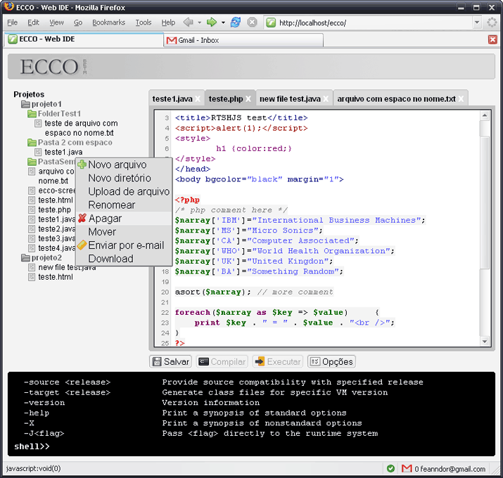

ECCO
Online Code Editor and Compiler
ECCO stands for online code editor and compiler. It's a programming IDE which supports many languages and is accessed through the browser. In other words, isn't necessary that the user has previously installed a programming environment to start to code.
Development Status: Alpha
Screenshot (07 september 2006 - in PT-BR):

{kind=link}
Feature list (features already working are in bold):
- Interface to edit/open/close files with tabs
- Interface to compile and execute console files
- Save files online
- Undo/redo
- Syntax highlighting for Java, PHP and HTML (other languages can be easily implemented)
- Visual interface for managing files
- Download source code and binary files to local computer
- File upload
- Send files through e-mail
- Create, rename, move and remove files, folders and projects
- Show compilation errors in console
- Command-line compilation of Java programs
- Command-line execution of console programs
- Execute some linux commands (ls, rm, rmdir, mkdir, cd, pwd, mv, cp)
- Internacionalization (translations only in EN and PT-BR for now)
- User access control, profile and options
Developers: